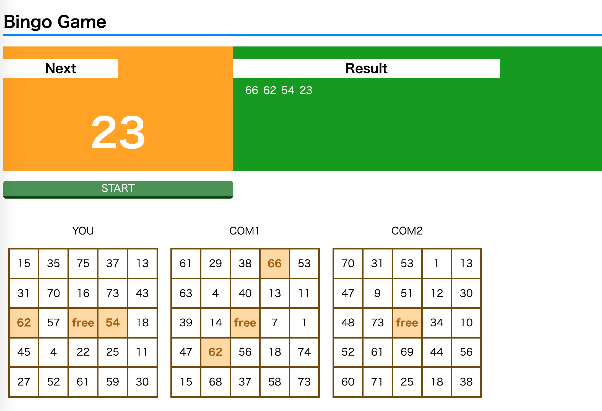

作品一覧
大阪府の市町村別コロナ感染者及び感染者率の推移の可視化
大阪府における市町村別のコロナ感染者数、及び10万人あたりの感染者数(人口に対する感染者率)の推移をProcessingを用いて可視化しました。
Bingo Game

JavaScriptの練習をする際に作成した作品です。ビンゴをするに当たって必要最低限の機能(ランダムに数字を表示・出た数字の記録・出た数字をカードに表示)を搭載しています。
地球上におけるマリオの挙動
ゲーム内の数字を用いて計算をすると、マリオの世界は地球に比べて重力加速度が大きいことがわかります。 そこでもしマリオのジャンプ力がそのままで地球でジャンプするとどのような動きになるのか、Pythonを用いてシミュレーションした結果になります。